Wohnen im ehemaligen Gutshaus am Ziernsee
{% if alle_verkauft %}Die drei Eigentumswohnungen im Obergeschoss der Villa Meteor in Kleinmenow sind verkauft. Das Haus bleibt ein Ort für Menschen, die Landleben in Gemeinschaft suchen.{% else %}Drei Eigentumswohnungen im Obergeschoss der Villa Meteor in Kleinmenow stehen zum Verkauf. Für Menschen, die Landleben in Gemeinschaft suchen.{% endif %}
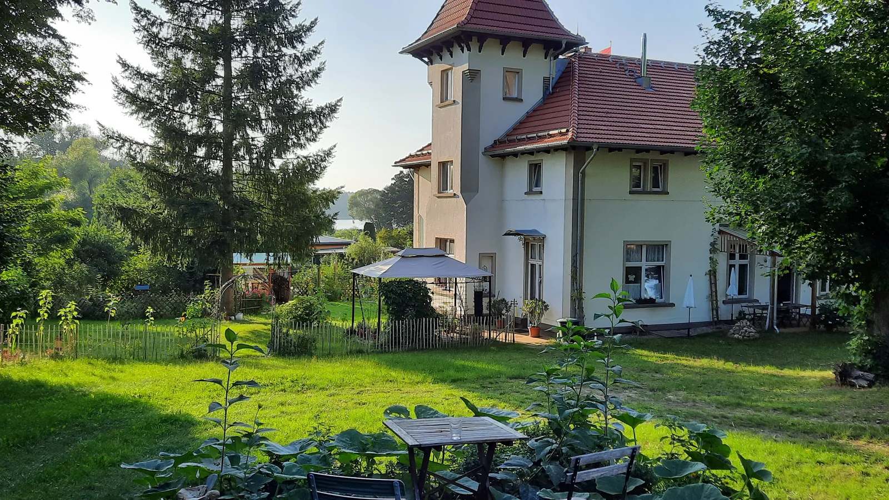
-
{% if alle_verkauft %}
- Verkauft
- Alle drei Wohnungen im Obergeschoss
- Zum Verkauf
- Drei Wohnungen im Obergeschoss
- Wohnflächen
- 38 bis 66 m², dazu je 19 m² Anteil an den Gemeinschaftsflächen
- Grundstück
- Ehemaliger Gutspark, ca. 4.000 m²
- Wasser
- Ziernsee in 200 m, drei Badestellen in der Nähe
- Übergabe
- Voraussichtlich 2028
- Verkauf
- Provisionsfrei, direkt vom Eigentümer
01Das Projekt
Ein Haus, das auf mehrere Schultern verteilt wird.
Seit 2012 gehört das ehemalige Gutshaus dem Berliner Architekten und Stadtplaner Tim Lehmann, der es seitdem Schritt für Schritt saniert. Auf etwa der Hälfte der Wohnfläche lebt die Meteoriten-WG, für die meisten ein Wochenend-Landprojekt. Die andere Hälfte, vor allem das Erdgeschoss, ist dauerhaft vermietet. Einige Bewohner wohnen seit fünfzig Jahren im Haus, und das soll so bleiben.
Jetzt wird das Haus in Wohnungseigentum aufgeteilt und die Verantwortung für Haus und Garten auf mehrere Schultern verteilt. Im Haupthaus entstehen neun Wohnungen, davon eine als Gemeinschaftswohnung im ehemaligen Speisesaal. Zwei Gartenhäuser auf dem Grundstück sind bereits verkauft. Die drei Wohnungen im Obergeschoss, WE 6, WE 7 und WE 8, stehen jetzt zum Verkauf.
Das Projekt hat den Charakter einer Baugruppe, weil noch nicht alles fertig ist, und einer Genossenschaft, weil vieles gemeinsam genutzt wird: Sauna, Garten, Nebengebäude, der Speisesaal. Rechtlich ist es klassisches Wohnungseigentum mit eigenem Grundbuchblatt. Bei einer kleinen Gemeinschaft ist das organisatorisch am einfachsten und bietet die größte Sicherheit.
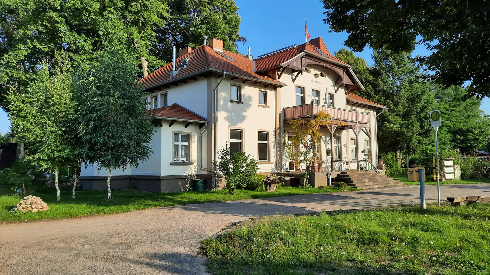
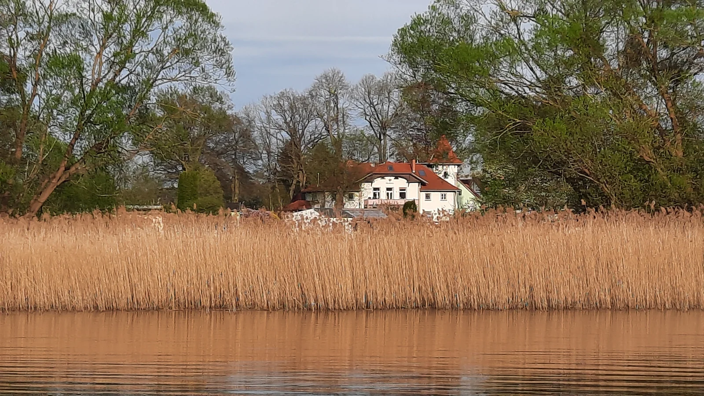
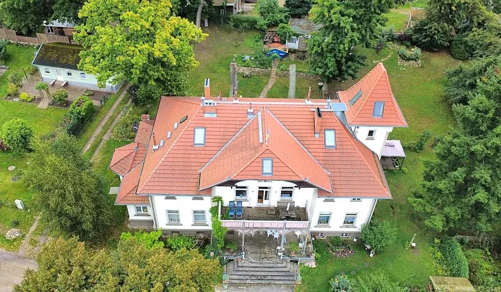
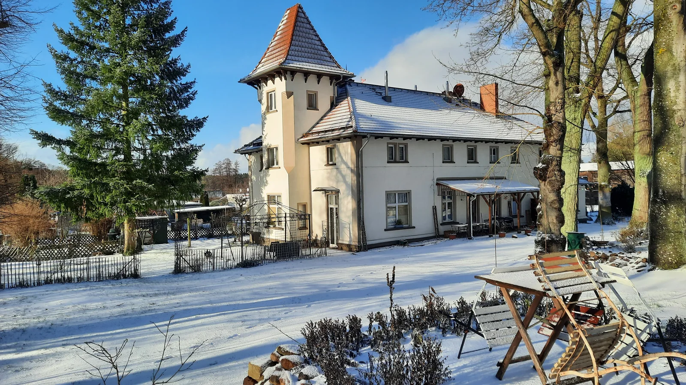
02Die Wohnungen
Drei Wohnungen im Obergeschoss, dazu 76 m² gemeinsam.
Alle drei Wohnungen liegen im ersten Obergeschoss der Villa Meteor. Zu jeder gehört ein Viertel der Gemeinschaftsflächen auf der Etage: Bibliothek, Kaminzimmer und zwei Balkone, einer davon mit Blick zum Ziernsee. Die Wohnungen werden im jetzigen Zustand verkauft. Etwa achtzig Prozent der Sanierung sind geschafft, der Rest kann im Rahmen der Baugenehmigung nach eigenen Vorstellungen fertig gebaut und gestaltet werden.
-
Wohnung6
Obergeschoss links
Wohnen, Küche, Schlafen, Büro oder Kinderzimmer, Bad, Flur. Die größte der drei Wohnungen, über die ganze linke Haushälfte.
- Wohnfläche
- 65,78 m²
- Mit Anteil
- 84,88 m²
- Preis
- {%- case s6 -%}{%- when "verkauft" -%}verkauft{%- when "reserviert" -%}reserviert{%- else -%}{{ p6 | default: "auf Anfrage" }}{%- endcase -%}
-
Wohnung7
Obergeschoss rechts, zur Straße
Wohnen mit Küche, Schlafen, Bad, Flur mit Abstellraum. Die kompakteste Einheit, direkt am Kaminzimmer.
- Wohnfläche
- 38,06 m²
- Mit Anteil
- 57,15 m²
- Preis
- {%- case s7 -%}{%- when "verkauft" -%}verkauft{%- when "reserviert" -%}reserviert{%- else -%}{{ p7 | default: "auf Anfrage" }}{%- endcase -%}
-
Wohnung8
Obergeschoss rechts, zum Garten
Wohnen und Schlafen, Essen, Küche, Büro oder Kinderzimmer, Bad, Flur. Südostlage, zum Garten hin.{% if inserat != "" and s8 == "frei" %} Zum Inserat auf Kleinanzeigen.{% endif %}
- Wohnfläche
- 48,83 m²
- Mit Anteil
- 67,92 m²
- Preis
- {%- case s8 -%}{%- when "verkauft" -%}verkauft{%- when "reserviert" -%}reserviert{%- else -%}{{ p8 | default: "auf Anfrage" }}{%- endcase -%}
Gemeinschaftsflächen der Wohnungen 6 bis 9
76,38 m² auf der Etage, jeweils zu einem Viertel (19,10 m²) im Eigentum: Bibliothek und Lounge mit 22,56 m², Kaminzimmer und Coworking mit 28,31 m², der Flur, der Westbalkon mit 18,37 m² und Blick zum Ziernsee sowie ein Südbalkon mit 5,93 m², der noch gebaut wird. Die Flächen teilen sich die drei Wohnungen im Obergeschoss mit der Wohnung im Dachgeschoss.
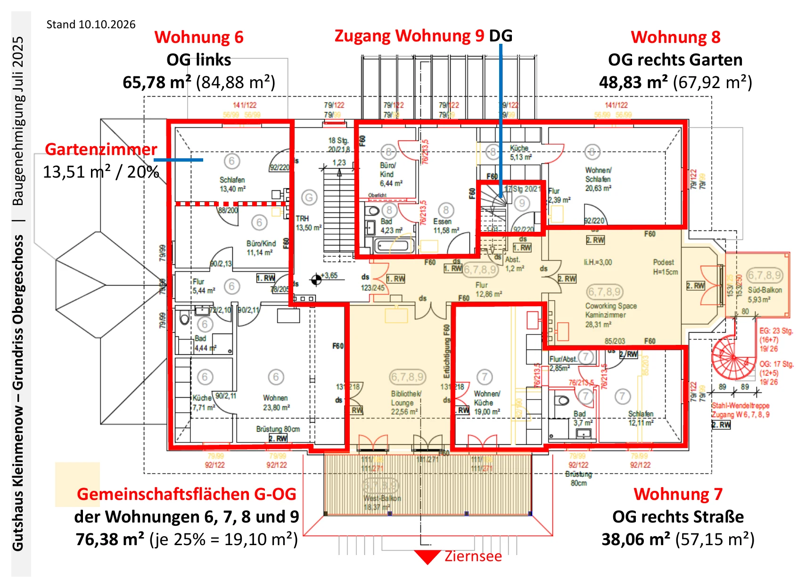
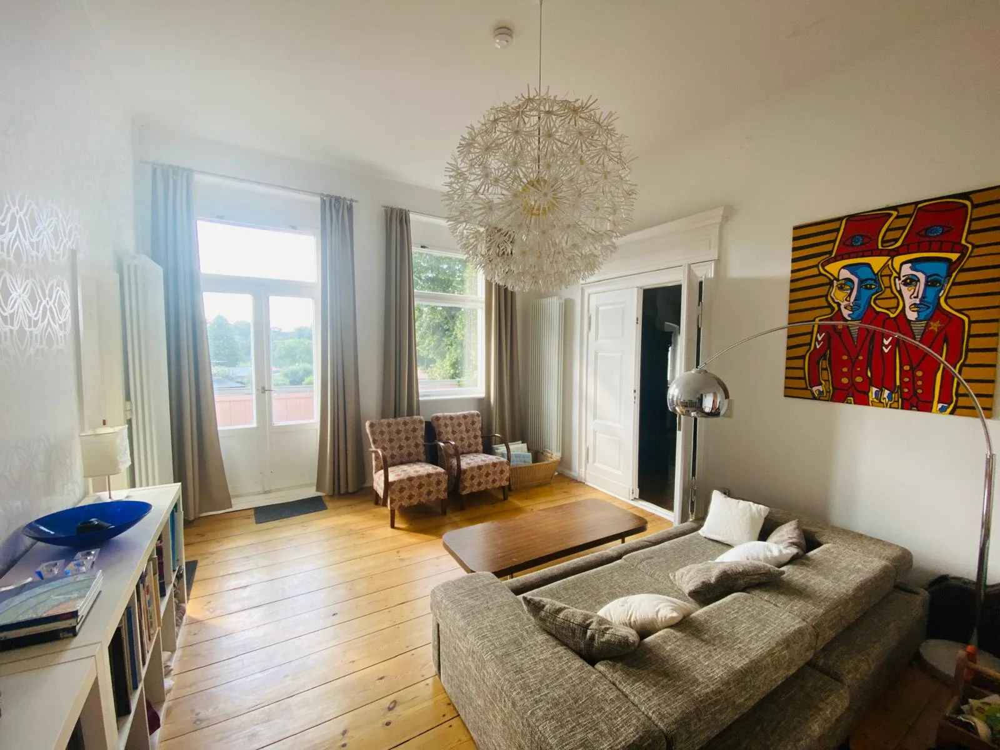
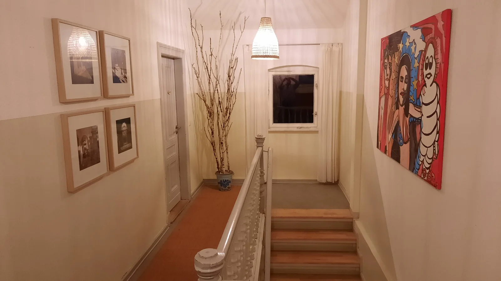
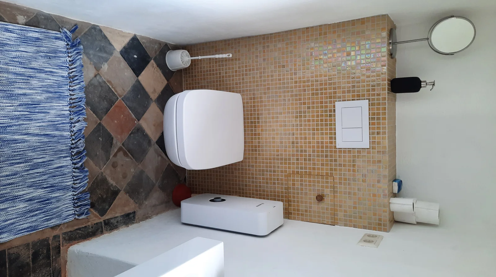
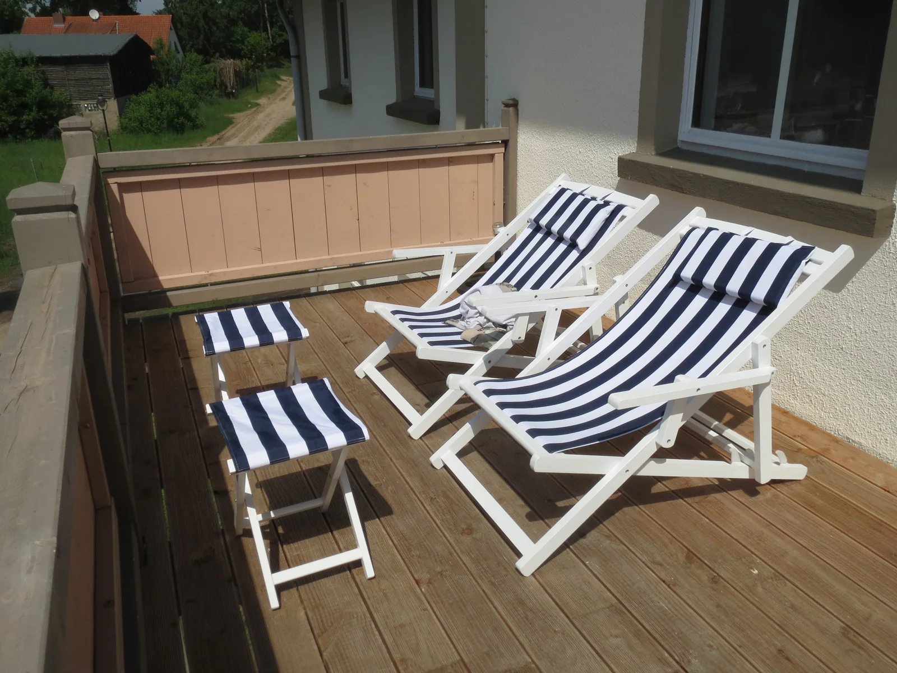
03Haus & Gemeinschaft
Ein bisschen Baugruppe, ein bisschen Genossenschaft.
Wer hier einsteigt, kauft eine Wohnung und teilt sich den Rest: die Sauna, das etwa 4.000 m² große Grundstück mit Gartenanlagen und Spielwiese, Werkstatt und Werkzeug, Holzlager und Feuerschale, den überdachten Fahrradständer. Der ehemalige Speisesaal des Landguts, heute die WG-Küche, ist in der Teilungserklärung als Gemeinschaftswohnung vorgesehen, für kleine Veranstaltungen, Workshops oder ab und zu ein Pop-up-Café. Wer gern kocht und einen Tag lang ein Restaurant eröffnen will: bitte sehr.
Geplant sind außerdem eine Außenküche und ein Gartenbad, gemeinsames WLAN auf dem Grundstück (Kleinmenow hat Glasfaser), ein Fitness- und Yogaraum im Keller und die Mitnutzung des Boots- und Badestegs in Abstimmung mit der Steggemeinschaft. Ein Auto lässt sich mit den Nachbarn teilen.
Du solltest ausdrücklich eine Gemeinschaft suchen und Erfahrung damit mitbringen, und Lust auf ein kleines Casting haben: Die vier Miteigentümer, die schon an Bord sind, wollen sich ebenfalls einen Eindruck machen.
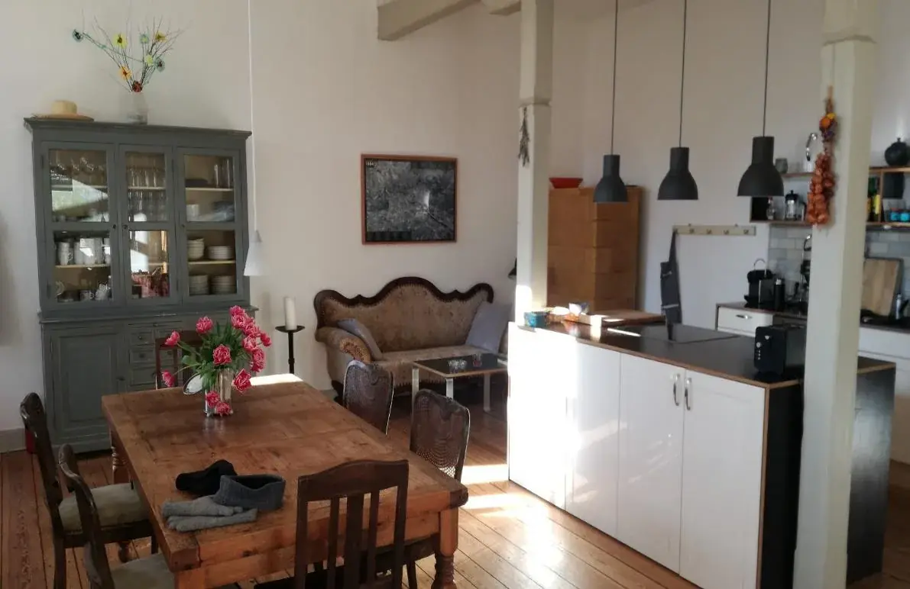
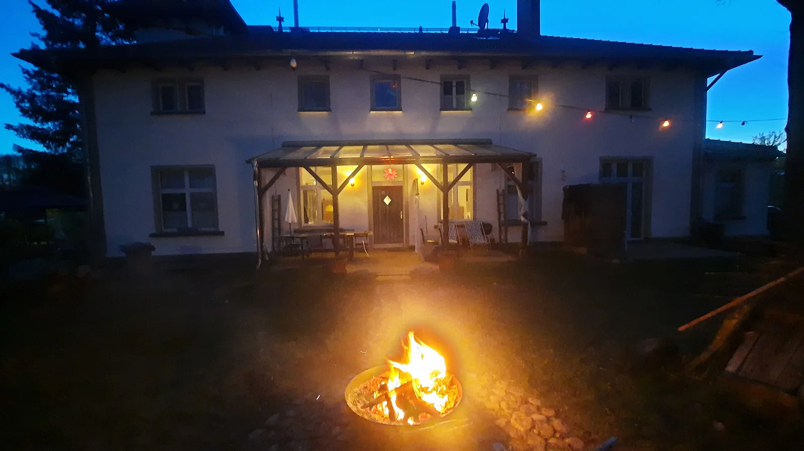
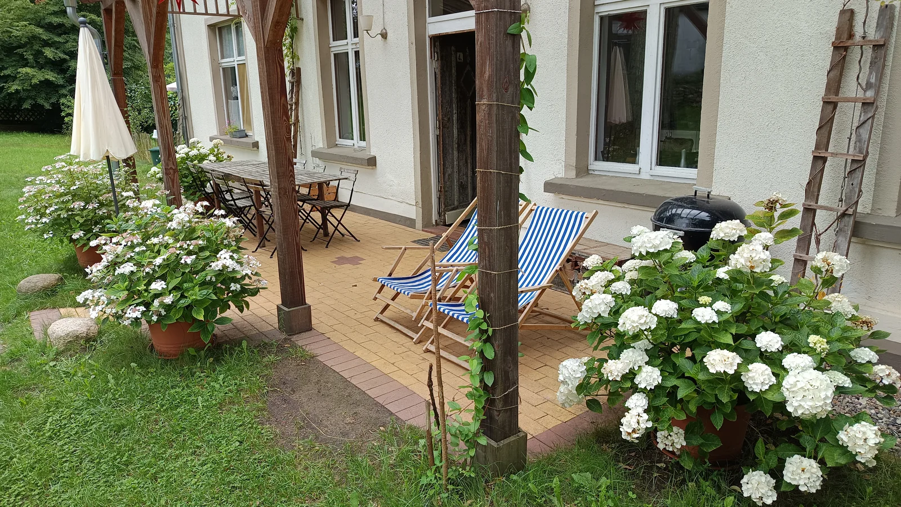
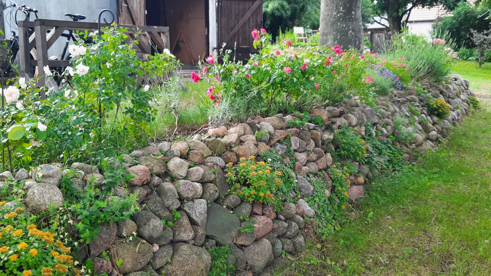
04Lage
Am Ende der Welt, eine Bahnstunde von Berlin.
Kleinmenow liegt im Fürstenberger Westend, am Ende einer Robinienallee, in einer Endmoränenlandschaft mit weiten Wäldern und Seen. Der Ziernsee ist 200 Meter entfernt, mit Sichtachse vom Haus; drei Badestellen liegen in unmittelbarer Nähe, dazu Klarwasserseen wie der Peetschsee und der Stechlin. Mit 28 Einwohnern pro Quadratkilometer ist Fürstenberg so dünn besiedelt wie Schweden.
Der Bahnhof Fürstenberg (Havel) ist vier Kilometer entfernt, eine Viertelstunde mit dem Rad auf einer schönen Strecke. Von dort fährt der RE 5 stündlich ohne Umsteigen nach Berlin, nach Gesundbrunnen, Hauptbahnhof, Potsdamer Platz und Südkreuz, und in die andere Richtung an die Ostsee. Ein eigenes Auto braucht man nicht unbedingt. In Fürstenberg gibt es Supermärkte, Restaurants, Cafés, einen Baumarkt und eine hübsche Altstadt.
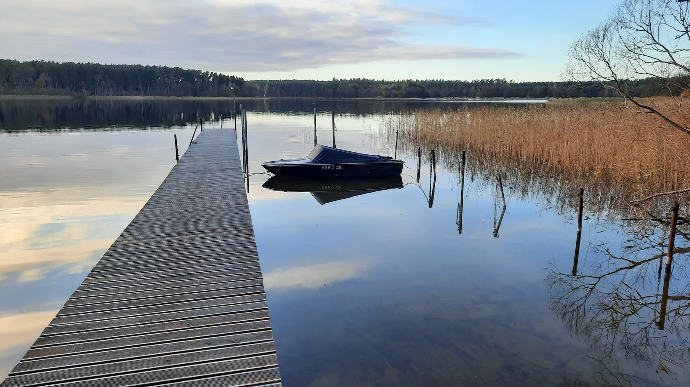
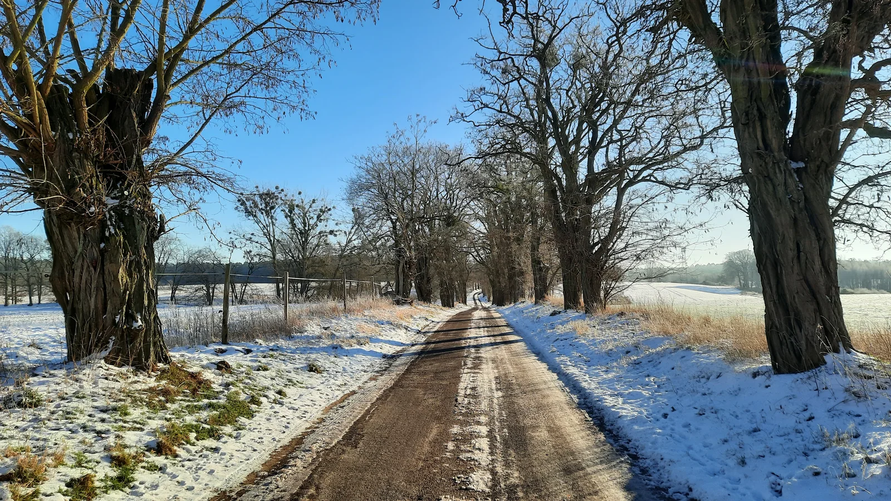
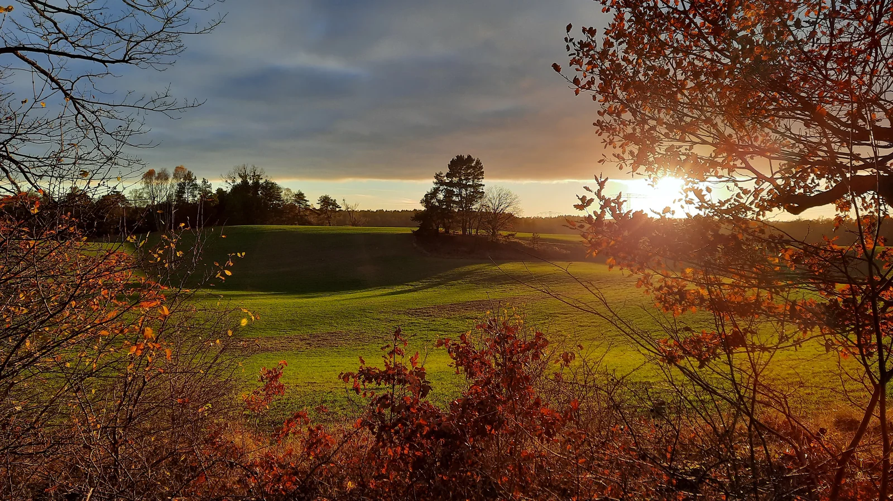
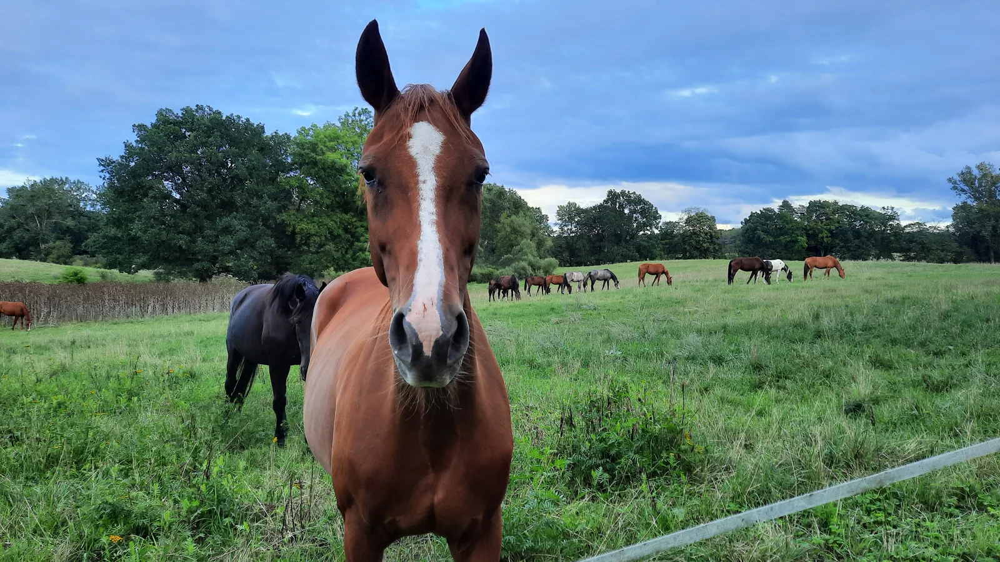
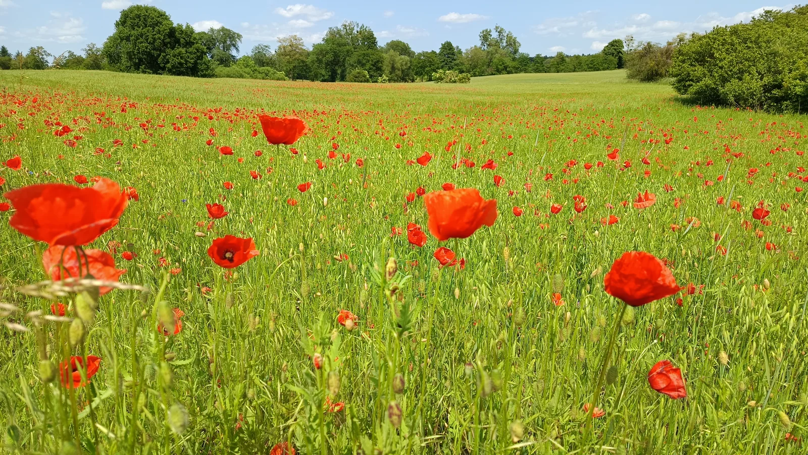
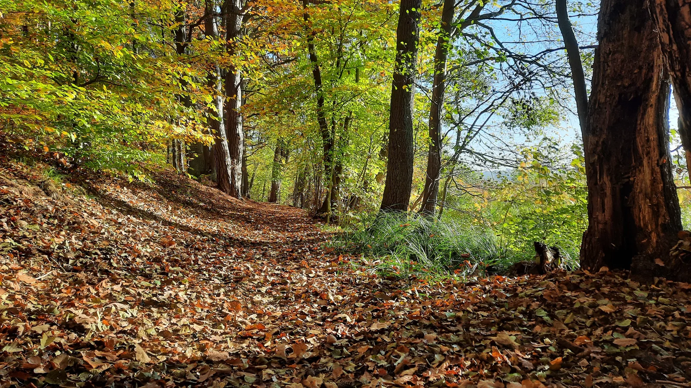
05Chronik
Vom Erbpachthof zum Märchenschloss.
- 1418
Menow wird erstmals urkundlich erwähnt.
- 1765
Der Hof Klein Menow wird zur selbständigen Meierei, 1810 zum Erbpachthof erhoben.
- 1862
Im Januar schlägt in Kleinmenow ein eimergroßer Meteorit ein, einer von nur 46 dokumentierten Einschlägen auf dem Gebiet der Bundesrepublik. Seine Teile sind heute in Museen weltweit zu sehen. Ein Gedenkstein an der östlichen Spitze des Gutshofs erinnert an ihn und an den Schäfer, der mit seiner Herde mit dem Schrecken davonkam. Der Meteorit „Meno“ gibt der Villa ihren Namen.
- um 1900
Das Pächterwohnhaus entsteht, in vielen Details dem späten Historismus und dem Heimatstil verpflichtet. Vor dem Haus steht eine alte Linde auf dem Rondell, nach Osten schließt ein Landschaftspark mit Teehaus an, nach Westen zum See hin liegt der Wirtschaftshof mit Stall, Scheune, Gewächshaus, Schmiede und Pumpenhaus. Ein Windrad pumpt Wasser in das Reservoir im Dachgeschoss.
- 1920er
General Paul Fleck, bereits im Ruhestand, ist Eigentümer des Landguts.
- 1930er
Der Holzbalkon über der berankten Veranda wird durch eine großzügige Terrasse auf Backsteinsäulen mit Skulpturen ersetzt.
- 1945
Der Besitzer Bernhard Kirchner wird im Zuge der Bodenreform von der sowjetischen Armee enteignet.
- DDR
Der Fassadenschmuck wird entfernt, das Haus in sechs Mietwohnungen aufgeteilt. Im Ort heißt es „Märchenschloss“. Die Familien Stölke und Kruggel ziehen ein und wohnen bis heute hier.
- 1998
Die Terrasse wird wegen unterlassener Instandhaltung abgerissen.
- 2012
Die kommunale Fürstenberger Wohnungsbaugesellschaft verkauft das Haus an den Berliner Architekten und Stadtplaner Tim Lehmann. Seitdem wird es schrittweise saniert; der Balkon wird in Anlehnung an das Original als Holzkonstruktion wieder errichtet. Zum 150. Jahrestag des Meteoriteneinschlags zieht die Meteoriten-WG ein.
- 2023
Genehmigung für zwei Gartenwohnhäuser anstelle von Nebengebäuden.
- 2025
Im Juli liegt die Baugenehmigung für die Aufteilung des Haupthauses in Wohnungen vor.
- Heute
Das Haus wird gemeinsam von Alteingesessenen und Neu-Fürstenbergern bewohnt und von Berlinern als Wochenendsitz genutzt.
Ausführlicher zur Geschichte des Hauses: Gutshaus Kleinmenow auf gutshaeuser.de, dem Verzeichnis der Guts- und Herrenhäuser.
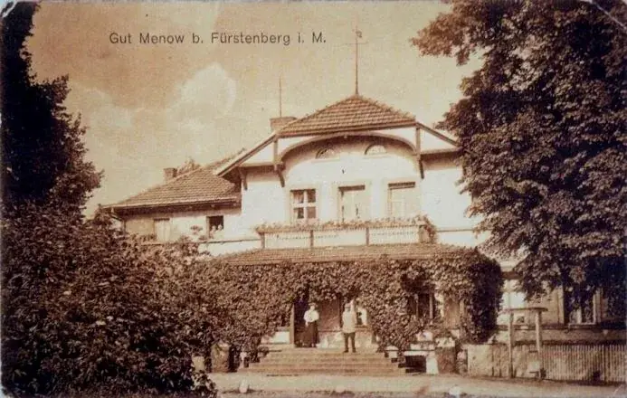
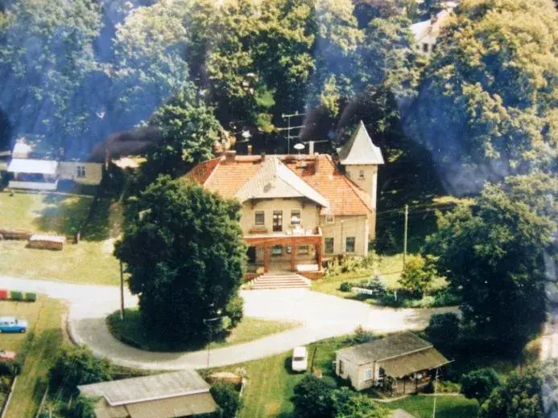
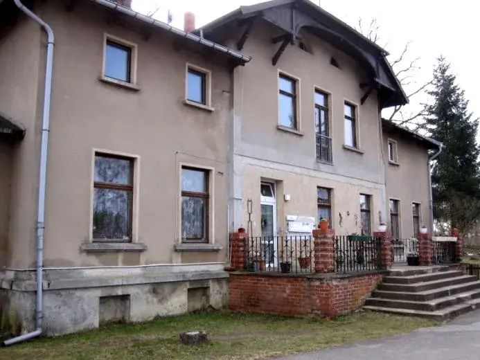
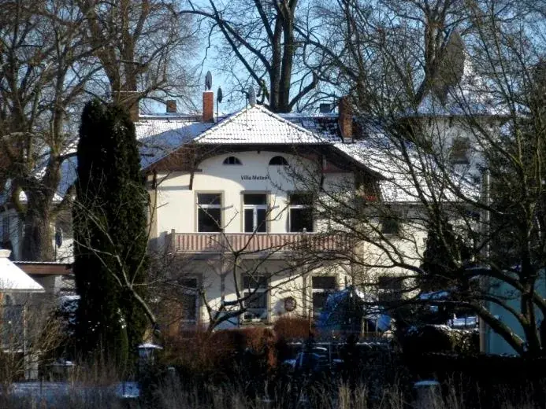
06Kurz gefragt
Was die meisten zuerst wissen wollen.
- Kann man in Kleinmenow dauerhaft wohnen oder nur am Wochenende?
- Beides. Einige Bewohner leben seit Jahrzehnten im Haus, andere nutzen es von Berlin aus als Wochenendsitz. Erstwohnsitz und Zweitwohnsitz sind möglich.
- Wie kommt man ohne Auto nach Kleinmenow?
- Der Bahnhof Fürstenberg (Havel) ist vier Kilometer entfernt, eine Viertelstunde mit dem Rad. Von dort fährt der RE 5 stündlich ohne Umsteigen nach Berlin und in die andere Richtung an die Ostsee.
- Kann man von hier aus arbeiten?
- Zu den Gemeinschaftsflächen im Obergeschoss gehört ein Kaminzimmer mit Coworking-Platz. Kleinmenow hat Glasfaser, gemeinsames WLAN auf dem Grundstück ist geplant. Berlin ist eine Bahnstunde entfernt, Homeoffice und Workation sind also machbar.
- Was wird gemeinsam genutzt?
- Sauna, das rund 4.000 m² große Grundstück mit Gartenanlagen und Spielwiese, Werkstatt und Werkzeug, Holzlager und Feuerschale, der überdachte Fahrradständer und der ehemalige Speisesaal als Gemeinschaftswohnung. Die Mitnutzung des Boots- und Badestegs ist in Abstimmung mit der Steggemeinschaft geplant.
- Ist das eine Genossenschaft oder eine Baugruppe?
- Rechtlich ist es klassisches Wohnungseigentum mit eigenem Grundbuchblatt, also eine Wohnungseigentümergemeinschaft. Vom Charakter her hat das Projekt etwas von einer Baugruppe, weil noch nicht alles fertig ist, und von einer Genossenschaft, weil vieles gemeinsam genutzt wird.
- Sind Hunde erlaubt?
- Ja, Hunde sind erlaubt.
- Fällt eine Maklerprovision an?
- Nein. Der Verkauf erfolgt provisionsfrei und direkt vom Eigentümer.
07Kontakt
Neugierig? Dann schreib uns.
EigentümerTim Lehmann
{{ d.mail }}{% if tel != "" %}
{{ d.telefon }}{% endif %}
Der Verkauf erfolgt provisionsfrei und direkt. Bitte keine Anfragen von Maklern.{% if inserat != "" and s8 == "frei" %} Das aktuelle Inserat für Wohnung 8 steht auf Kleinanzeigen.{% endif %}
{% endunless %}